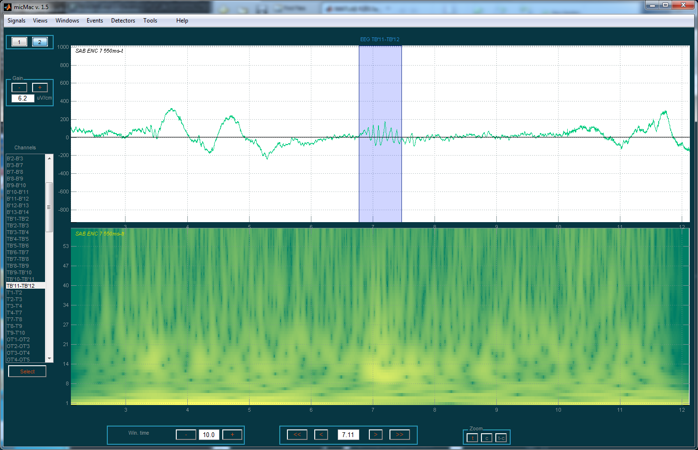

- Github link : micmac
- Documentation can be found here : https://micmac.readthedocs.io/en/latest/
micMac was designed to visualize and analyse intracerebral recordings. micMac handles micro- and Macro- recordings and is helpful for visualizing signals recorded by hybrids electrodes.
Installation
- Install EEGLAB and add it to the MATLAB path.
- Install the Biosig toolbox from EEGLAB
- Download micmac
- Add micmac to the MATLAB path
Screenshots
Global view


Detail view
